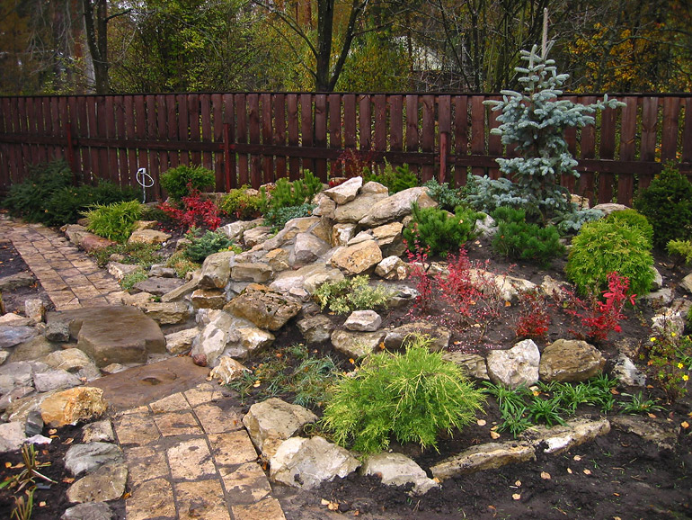
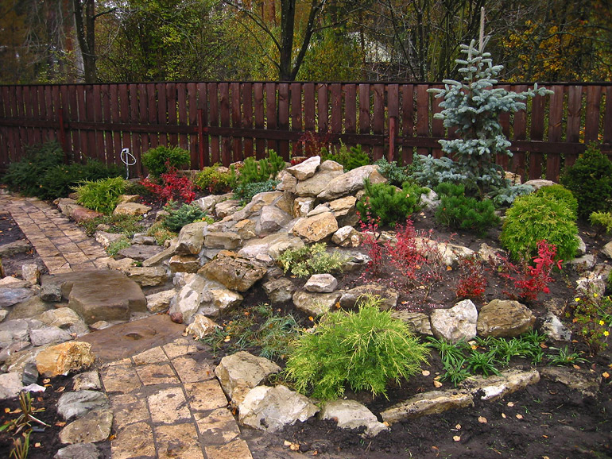
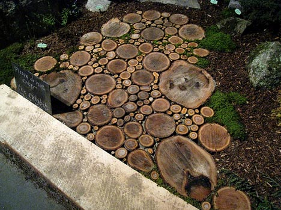
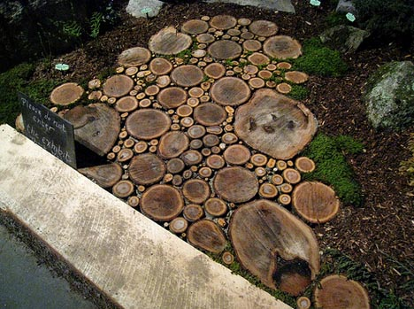
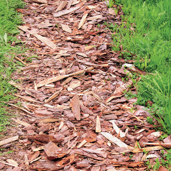
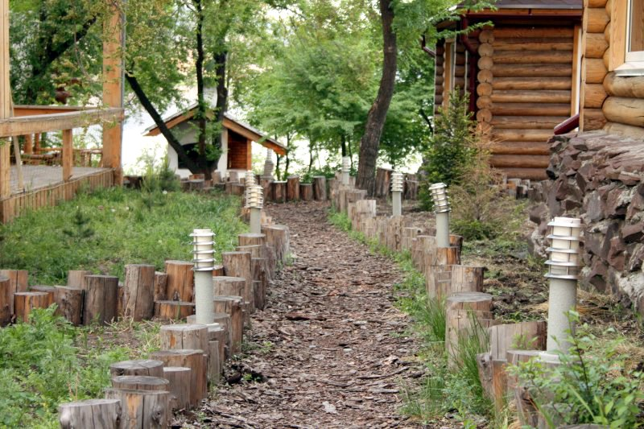
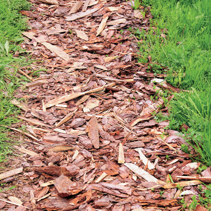
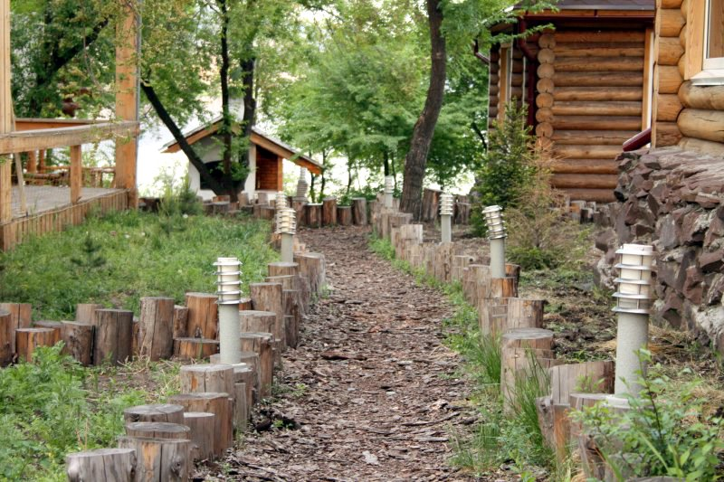

| Доріжки Чернівці |
|
Доріжки – надзвичайно важливий елемент будь–якої садової ділянки – це і елемент дизайну, і елемент практичності. Вони поєднують між собою всі садові зони, при цьому влаштовуючи до них вільний та зручний прохід.
На ділянці з доріжками завжди буде чисто і акуратно, вони дуже швидко висихають після дощу, і весною саме з них перших сходить сніг, так як вони швидше нагріваються відносно інших поверхностей. Доріжки легко замітати й мити, по ним зручно ходити. В плані дизайну їх значення – визначаюче: від їхньої форми і матеріалу залежить наше візуальне сприйняття ділянки, вони відразу показують його стилістику.
Доріжки прокладаються в співвідношенні з накресленим дизайном – проектом ділянки. Та як бути, якщо якийсь з них не повністю “вимальовується” ? В такому випадку найкращий варіант поки, що нічого не робити, по закінченню сезону їхні траекторії з’являться самі собою – Ви просто їх витоптуєте – це і буде самий оптимальний варіант з точки зору ергономіки. Ширина доріжок вибирається в залежності від їх майбутнього використання – скільки людей буде одночасно ходити по ним і чи передбачається по ним переміщення садової техніки. Мінімальна ширина доріжки повинна бути не менш ніж 70 см, щоб по ній могли розминутись двоє людей. Якщо ж така доріжка проходить між чагарниками, квітниками, то її ширина автоматично збільшується на 1 – 1,2 м.
Види доріжок різноманітні, вони можуть бути з натурального каменю, цегли, литих цементних плит, бетонні, з дошок, дерев’яних спилів, гравію, соснової кори, а також трав’яні. Часто зустрічаються і різноманітні комбінації всього перечисленого. Для того, щоб на ділянці було гарно, а також, щоб візуально збільшити його розміри, краще, якщо не всі доріжки на ділянці будуть з однакового матеріалу.
Доріжки з натурального каменю
  
Доріжки з натурального каменю дуже декоративні, довговічні і гарні. Для них використовується плитняк – піщаник, котрий буває різноманітних відтінків – сірий, жовтуватий, зеленуватий. Більш виграшно виглядають крупні плити. Доріжки з каміння можуть бути суцільними, тоді окремі частини при їхній укладці стараються максимально підігнати один до одного, або можуть являти собою так звані “острівці”. Такий спосіб просто неповторно дивиться на газоні або в декоративних зонах саду, біля клумб, водойм.
Доріжки з цегли   
Їхня особливість в тому, що вони візуально підкреслюють, виділяють квітники, кущі, садові аксесуари. Перевага цегли – в його достатньо широкій кольоровій гамі, у неї багато відтінків, тому з неї можна викласти орнамент, малюнок. Стару та биту цеглу можна також використовувати. Для деяких стилів – це, навіть, потрібно. З цегли можна викласти і бордюри до доріжок. ЇЇ також як і камінь можна викладати “острівцями”. Ні цегла, ні камінь ніколи не бувають слизькими і швидко просихають дощу.
Доріжки з бетонних плит
  
Доріжки з готових бетонних плит – влаштовуються абсолютно так, як і доріжки з плиточного каміння. Ці плити бувають самих різноманітних форм, кольорів і розмірів: квадрати, “цеглинки” і т. д. особливо незамінними ці плитки, якщо необхідно викласти чіткий орнамент, контур площадки, водойми, підкреслити деякі лінії на ділянці. Особливо виграшно дивляться вони на ділянці з щільно вираженою “геометрією”. При цьому ними ще можна викласти квітники, цоколь будинку, бесідки. Дуже ефективний прийом: якщо залишити в мощенні “вікно”, не покласти декілька плиток, то отримаємо модульний квітник. В нього можна насипати ґрунт і посадити будь – які рослини, гарний кущ чи хвою, зробити мініатюрну альпійську гірку або сад каміння.
Бетонні доріжки
 
Бетонні доріжки в використанні самі прості, до того ж по щільності й іншим властивостям. Сам по собі бетон, дивиться монотонно, але є безліч способів його “облаштувати”. По – перше, бетон можна пофарбувати. По – друге, в нього можна вмостити багато цікавих речей – залишки каміння, кусочки цегли або кераміки, кольоровий гравій, можна окремі крупні каміння… на поверхні бетону можна намалювати будь – який малюнок. З бетону також можна зробити імітацію природного каміння.
Доріжки з дерев’яних спилiв
  Доріжки з дерев’яних спилiв можуть бути зроблені з дошок або дерев’них спилів. Доріжки з дошок менш практичні для ходьби, з них краще виготовляти настили, подіуми,, мостики, вони гарні передусім як “архітектурний” елемент. Але для інтенсивного руху, особливо після дощу, вони не підходять. Краще влаштувати доріжки із дерев’яних спилів,, вони практичніше та й виглядають більш ефективніше.
Доріжки з гравію
  
Доріжки з гравію зробити самому зовсім не складно, вона кладеться на пісок: на підготовлену основу просто насипається гравій і потім розрівнюється. Виглядають такі доріжки дуже природно, вони затишні, на них не застоюється вода. Дуже гармонують з рослинами. Гравій також буває багатьох відтінків, що дозволяє отримати різноманітні ефекти. Та якщо по таким доріжкам планується часто ходити або вони розміщені на схилі, до них обов’язково потрібен бордюр. В іншому випадку доріжки можуть розмиватися дощами і талими водами, а гравій може розповзатися, розноситися по ділянці зі взуттям, садовою технікою.
Доріжки із соснової кори
  
Доріжки із соснової кори робляться аналогічно. Це дуже стильний елемент садового дизайну, і в деяких стилях, таких, як “лісовий” або “еко”, без них не обійтись. Як типічно природній матеріал він дуже екологічний для рослин і людини. Бордюри для таких доріжок також обов’зкові – вузькі дощечки, стовпчики – пеньки, або цеглу.
Трав’яні доріжки |